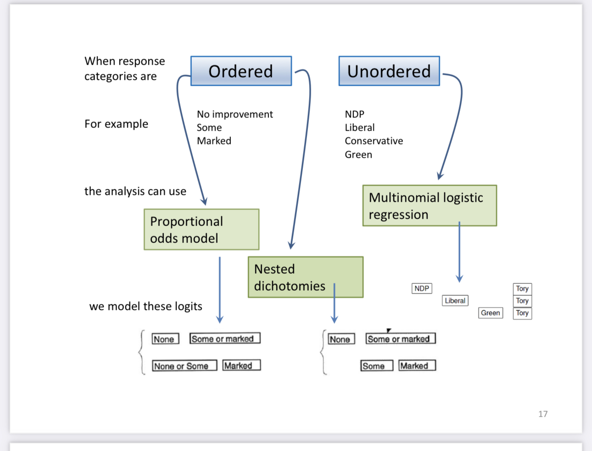
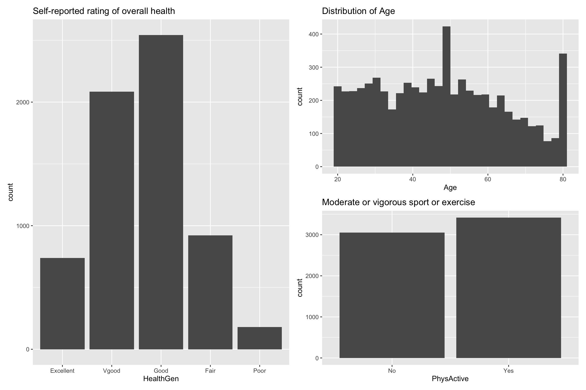
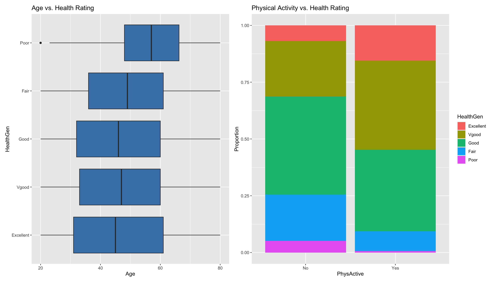
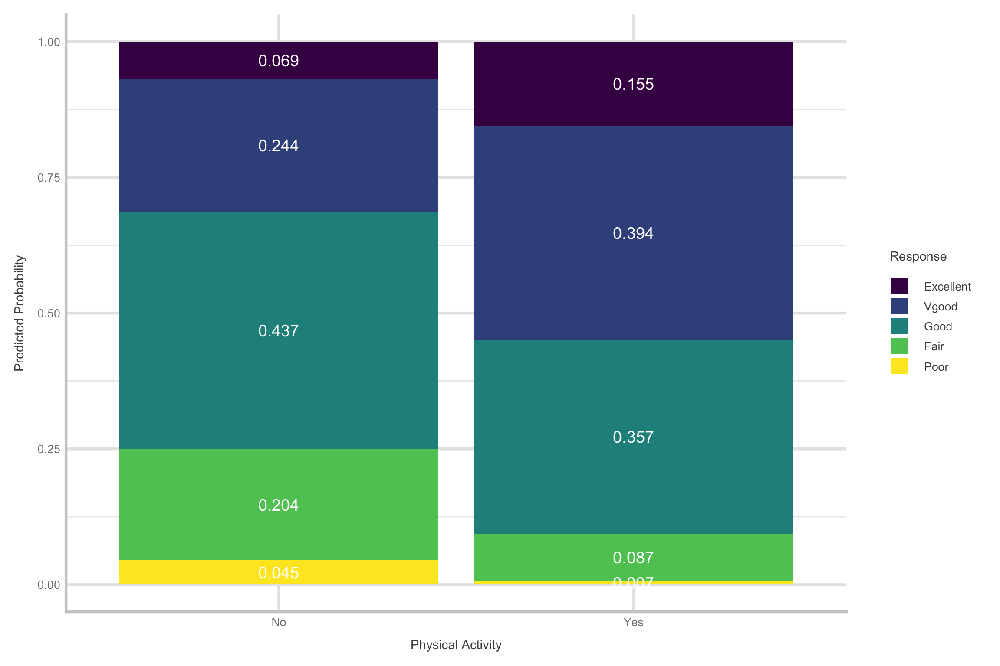
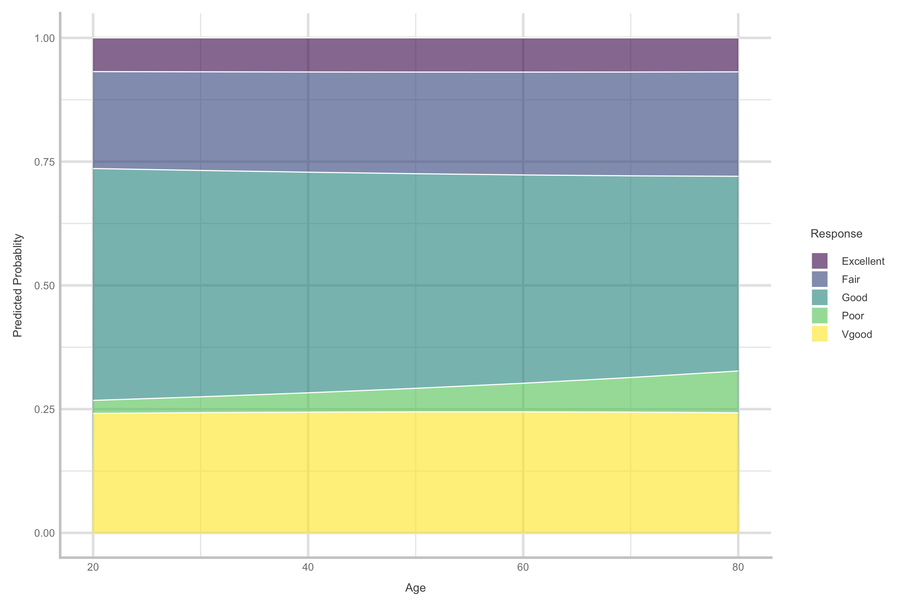
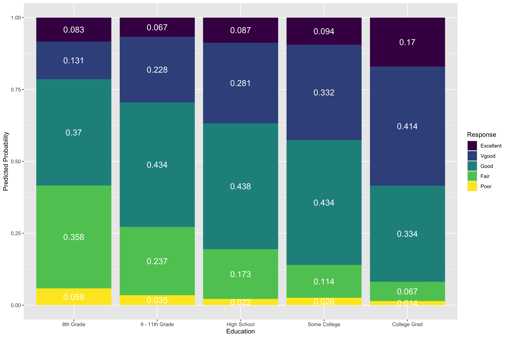

Princeton University
2026-03-04
Introduce multinomial logistic regression
Motivating example: NHANES dataset

Extension of Bernoulli and binomial distributions
When you have more than two outcomes and fixed number of trials
\[P(X_1 = x_1, X_2 = x_2, \ldots, X_k = x_k) = \frac{n!}{x_1! x_2! \cdots x_k!} p_1^{x_1} p_2^{x_2} \cdots p_k^{x_k}\]
\[\text{Mean of } X_i = E[X_i] = n \cdot p_i\]\[\text{Variance of } X_i = \text{Var}(X_i) = n \cdot p_i \cdot (1 - p_i)\]
\[\begin{array}{rcl} L_1 &=& \alpha_1-\beta_1x_1-\cdots-\beta_p X_p\\ L_2 &=& \alpha_2-\beta_1x_1-\cdots-\beta_p X_p & \\ L_{J-1} &=& \alpha_{J-1}-\beta_1x_1-\cdots-\beta_p X_p \end{array}\]
\[\begin{array}{rcl} L_1 &=& \alpha_1+\beta_1x_1+\cdots+\beta_p X_p\\ L_2 &=& \alpha_2+\beta_2x_1+\cdots+\beta_p X_p & \\ L_{J-1} &=& \alpha_{J-1}+\beta_jx_1+\cdots+\beta_p X_p \end{array}\]
\[P(y_i = 0|x_i) = P_{i0}\] and \[P(y_i = 1|x_i) = P_{i1}\]
\[\log\bigg(\frac{p_{i1}}{p_{i0}}\bigg) = \beta_{0k} + \beta_{1k} x_i\]
Slope: \(\beta_1\): when x increases by one unit, the odds of Y = 1 vs. baseline is expected to multiply by a factor or \(exp(\beta)\)
Intercept: \(\beta_0\): when x = 0 the odds of Y = 1 is expected to be \(exp(\beta)\)
Geller et al.(2018)
Which of the following best describes your pattern of study?
Let “Space out” be the baseline category. Then
\[\log\bigg(\frac{\pi_{light }}{\pi_{space}}\bigg) = \beta_{0B} + \beta_{1B}x_i \\[10pt] \log\bigg(\frac{\pi_{heavy}}{\pi_{space}}\bigg) = \beta_{0C} + \beta_{1C} x_i\]
Multinomial logistic regression models the probabilities of j response categories (j-1)
Typically these compare each of the first m-1 categories to the last (reference) category
Logits for any pair of categories can be calculated from the m-1 fitted ones
National Health and Nutrition Examination Survey is conducted by the National Center for Health Statistics (NCHS)
The goal is to “assess the health and nutritional status of adults and children in the United States”
This survey includes an interview and a physical examination
We will use the data from the NHANES R package
Contains 75 variables for the 2009 - 2010 and 2011 - 2012 sample years
The data in this package is modified for educational purposes and should not be used for research
Original data can be obtained from the NCHS website for research purposes
Type ?NHANES in console to see list of variables and definitions
Question: Can we use a person’s age and whether they do regular physical activity to predict their self-reported health rating?
We will analyze the following variables:
HealthGen: Self-reported rating of participant’s health in general. Excellent, Vgood, Good, Fair, or Poor.
Age: Age at time of screening (in years). Participants 80 or older were recorded as 80.
PhysActive: Participant does moderate to vigorous-intensity sports, fitness or recreational activities
Rows: 6,465
Columns: 5
$ HealthGen <fct> Good, Good, Good, Good, Vgood, Vgood, Vgood, Vgood, Vgo…
$ Education <fct> High School, High School, High School, Some College, Co…
$ Age <int> 34, 34, 34, 49, 45, 45, 45, 66, 58, 54, 50, 33, 60, 56,…
$ PhysActive <fct> No, No, No, No, Yes, Yes, Yes, Yes, Yes, Yes, Yes, No, …
$ PhysActive_yes <fct> No, No, No, No, Yes, Yes, Yes, Yes, Yes, Yes, Yes, No, …

multinom() function in the nnet packageThe baseline category for the model is Excellent
The model equation for the log-odds a person rates themselves as having “Fair” health vs. “Excellent” is
\[\log\Big(\frac{\hat{\pi}_{Fair}}{\hat{\pi}_{Excellent}}\Big) = 1.03 + 0.001 ~ \text{age} - 1.66 ~ \text{PhysActive}\]
\[\log\Big(\frac{\hat{\pi}_{Fair}}{\hat{\pi}_{Excellent}}\Big) = 1.03 + \color{Red} {0.001} ~ \text{age} - 1.66 ~ \text{PhysActive}\]
For each additional year in age, the odds a person rates themselves as having fair health versus excellent health are expected to multiply by 1.001 (exp(0.001)), holding physical activity constant.
\[\log\Big(\frac{\hat{\pi}_{Fair}}{\hat{\pi}_{Excellent}}\Big) = 1.03 + 0.001 ~ \text{age} \color{Red}{- 1.66} ~ \text{PhysActive}\]
The odds a person who does physical activity will rate themselves as having fair health versus excellent health are expected to be 0.19 (exp(-1.66)) times the odds for a person who doesn’t do physical activity, holding age constant.
\[\log\Big(\frac{\hat{\pi}_{Fair}}{\hat{\pi}_{Excellent}}\Big) = \color{Red}{1.03} + 0.001 ~ \text{age} - 1.66 ~ \text{PhysActive}\]
(exp(1.03)).⚠️ Need to mean-center age for the intercept to have a meaningful interpretation!
The baseline category for the model is Excellent
The model equation for the log-odds a person rates themselves as having “Good” health vs. “Excellent” is
\[\log\Big(\frac{\hat{\pi}_{Good}}{\hat{\pi}_{Excellent}}\Big) = 1.99 - 0.003 ~ \text{age} - 1.011 ~ \text{PhysActive}\]
\[\log\Big(\frac{\hat{\pi}_{Good}}{\hat{\pi}_{Excellent}}\Big) = 1.99 \color{Red}{- 0.003} ~ \text{age} - 1.011 ~ \text{PhysActive}\]
For each additional year in age, the odds a person rates themselves as having “Good” health versus “Excellent” health are expected to multiply by 0.997 (exp(-0.003)), holding physical activity constant
\[\log\Big(\frac{\hat{\pi}_{Good}}{\hat{\pi}_{Excellent}}\Big) = {1.99} - 0.003 ~ \text{age} \color{Red}{- 1.011} ~ \text{PhysActive}\]
The odds a person who does physical activity will rate themselves as having “Good” health versus “Excellent” health are expected to be 0.364 (exp(-1.01)) times the odds for a person who doesn’t do physical activity, holding age constant
\[\log\Big(\frac{\hat{\pi}_{Good}}{\hat{\pi}_{Excellent}}\Big) = \color{Red}{1.99} - 0.003 ~ \text{age} - 1.011 ~ \text{PhysActive}\]
(exp(1.99)).⚠️ Need to mean-center age for the intercept to have a meaningful interpretation!
Important
anova functionemmeans approach
PhysActive)multi_an <- emmeans(health_m, ~ PhysActive|HealthGen) # get education
coefs = contrast(regrid(multi_an, "log"),"trt.vs.ctrl1", by="PhysActive") # make sure logit and response vs. baseline
contrast(coefs, "revpairwise", by = "contrast") %>% kable() # This line performs additional contrasts on the results obtained from the previous step (coefs).| contrast1 | contrast | estimate | SE | df | t.ratio | p.value |
|---|---|---|---|---|---|---|
| Yes - No | Vgood - Excellent | -0.3317154 | 0.0948777 | 12 | -3.496243 | 0.0044123 |
| Yes - No | Good - Excellent | -1.0113060 | 0.0921090 | 12 | -10.979450 | 0.0000001 |
| Yes - No | Fair - Excellent | -1.6624228 | 0.1094439 | 12 | -15.189722 | 0.0000000 |
| Yes - No | Poor - Excellent | -2.6704765 | 0.2361543 | 12 | -11.308187 | 0.0000001 |
For continuous predictors, emmeans uses marginal effects at the mean (MEM)
We can use marginaleffects to get average effect of Age
PhysActive| x | predicted | std.error | conf.low | conf.high | response.level | group |
|---|---|---|---|---|---|---|
| No | 0.069 | 0.005 | 0.068 | 0.070 | Excellent | 1 |
| No | 0.244 | 0.008 | 0.241 | 0.247 | Vgood | 1 |
| No | 0.437 | 0.009 | 0.433 | 0.442 | Good | 1 |
| No | 0.204 | 0.007 | 0.202 | 0.207 | Fair | 1 |
| No | 0.045 | 0.004 | 0.045 | 0.045 | Poor | 1 |
| Yes | 0.155 | 0.006 | 0.153 | 0.157 | Excellent | 1 |
| Yes | 0.394 | 0.008 | 0.390 | 0.398 | Vgood | 1 |
| Yes | 0.357 | 0.008 | 0.353 | 0.361 | Good | 1 |
| Yes | 0.087 | 0.005 | 0.086 | 0.088 | Fair | 1 |
| Yes | 0.007 | 0.001 | 0.007 | 0.007 | Poor | 1 |
PhysActiveggemmeans(health_m, terms = c("PhysActive")) %>%
ggplot(aes(x = x, y = predicted, fill = response.level)) +
geom_col() +
geom_text(
aes(label = round(predicted, 3)),
color = "white",
position = position_fill(vjust = 0.5),
size = 5
) +
labs(
x = "Physical Activity",
y = "Predicted Probability",
fill = "Response"
) +
theme(text = element_text(size = 30)) +
scale_fill_viridis(discrete = TRUE) +
theme_lucid(base_size = 25)
Age
Education to the model?We consider adding the participants’ Education level to the model
8thGrade, 9-11thGrade, HighSchool, SomeCollege, and CollegeGradModels we’re testing:
Age, PhysActiveAge, PhysActive, Education\[\begin{align}&H_0: \beta_{8thGrade} = \beta_{9-11thGrade} = \beta_{HighSchool} = \beta_{SomeCollege} = \beta_{CollegeGrad} = 0\\ &H_a: \text{ at least one }\beta_j \text{ is not equal to }0\end{align}\]
Education to the model?Education to the model?| Model | Resid. df | Resid. Dev | Test | Df | LR stat. | Pr(Chi) |
|---|---|---|---|---|---|---|
| Age + PhysActive | 25848 | 16994.23 | NA | NA | NA | |
| Age + PhysActive + Education | 25832 | 16505.10 | 1 vs 2 | 16 | 489.1319 | 0 |
At least one coefficient associated with Education is non-zero. Therefore, we will include Education in the model.
emmeans to extract the log odds coefs for comparisons of interestmulti_an <- emmeans(model_full, ~ Education|HealthGen) # get education
coefs = contrast(regrid(multi_an, "log"),"trt.vs.ctrl1", by="Education") # make sure logit and response vs. baseline
contrast(coefs, "revpairwise", by = "contrast") # This line performs additional contrasts on the results obtained from the previous step (coefs).contrast = Vgood - Excellent:
contrast1 estimate SE df t.ratio p.value
(9 - 11th Grade) - 8th Grade 0.7754 0.308 28 2.519 0.1151
High School - 8th Grade 0.7139 0.279 28 2.554 0.1071
High School - (9 - 11th Grade) -0.0614 0.200 28 -0.307 0.9979
Some College - 8th Grade 0.8035 0.272 28 2.958 0.0453
Some College - (9 - 11th Grade) 0.0282 0.188 28 0.150 0.9999
Some College - High School 0.0896 0.135 28 0.664 0.9625
College Grad - 8th Grade 0.4324 0.269 28 1.607 0.5052
College Grad - (9 - 11th Grade) -0.3430 0.184 28 -1.863 0.3600
College Grad - High School -0.2816 0.128 28 -2.203 0.2082
College Grad - Some College -0.3712 0.105 28 -3.548 0.0112
contrast = Good - Excellent:
contrast1 estimate SE df t.ratio p.value
(9 - 11th Grade) - 8th Grade 0.3823 0.273 28 1.402 0.6312
High School - 8th Grade 0.1235 0.245 28 0.505 0.9862
High School - (9 - 11th Grade) -0.2589 0.188 28 -1.374 0.6487
Some College - 8th Grade 0.0366 0.237 28 0.154 0.9999
Some College - (9 - 11th Grade) -0.3457 0.178 28 -1.946 0.3176
Some College - High School -0.0869 0.129 28 -0.673 0.9607
College Grad - 8th Grade -0.8178 0.236 28 -3.468 0.0136
College Grad - (9 - 11th Grade) -1.2002 0.176 28 -6.828 <.0001
College Grad - High School -0.9413 0.125 28 -7.531 <.0001
College Grad - Some College -0.8544 0.105 28 -8.161 <.0001
contrast = Fair - Excellent:
contrast1 estimate SE df t.ratio p.value
(9 - 11th Grade) - 8th Grade -0.1884 0.274 28 -0.689 0.9572
High School - 8th Grade -0.7716 0.247 28 -3.126 0.0309
High School - (9 - 11th Grade) -0.5832 0.199 28 -2.933 0.0479
Some College - 8th Grade -1.2668 0.242 28 -5.243 0.0001
Some College - (9 - 11th Grade) -1.0784 0.191 28 -5.637 <.0001
Some College - High School -0.4953 0.149 28 -3.330 0.0190
College Grad - 8th Grade -2.3936 0.251 28 -9.544 <.0001
College Grad - (9 - 11th Grade) -2.2052 0.203 28 -10.882 <.0001
College Grad - High School -1.6220 0.161 28 -10.058 <.0001
College Grad - Some College -1.1267 0.148 28 -7.590 <.0001
contrast = Poor - Excellent:
contrast1 estimate SE df t.ratio p.value
(9 - 11th Grade) - 8th Grade -0.2980 0.342 28 -0.870 0.9053
High School - 8th Grade -1.0438 0.325 28 -3.212 0.0252
High School - (9 - 11th Grade) -0.7457 0.291 28 -2.566 0.1047
Some College - 8th Grade -0.9419 0.307 28 -3.069 0.0351
Some College - (9 - 11th Grade) -0.6438 0.269 28 -2.394 0.1467
Some College - High School 0.1019 0.244 28 0.417 0.9933
College Grad - 8th Grade -2.1252 0.360 28 -5.898 <.0001
College Grad - (9 - 11th Grade) -1.8271 0.328 28 -5.563 0.0001
College Grad - High School -1.0814 0.307 28 -3.526 0.0118
College Grad - Some College -1.1833 0.283 28 -4.183 0.0022
Results are averaged over the levels of: PhysActive
Results are given on the log (not the response) scale.
P value adjustment: tukey method for comparing a family of 5 estimates Educationplot_edu <- ggemmeans(model_full, terms = c("Education")) %>%
ggplot(aes(x = x, y = predicted, fill = response.level)) +
geom_col() +
geom_text(
aes(label = round(predicted, 3)),
color = "white",
position = position_fill(vjust = 0.5),
size = 5
) +
labs(
x = "Education",
y = "Predicted Probability",
fill = "Response"
) +
scale_fill_viridis(discrete = TRUE)
nhanes_adult <- nhanes_adult %>%
mutate(Excellent = factor(if_else(HealthGen == "Excellent", "1", "0")),
Vgood = factor(if_else(HealthGen == "Vgood", "1", "0")),
Good = factor(if_else(HealthGen == "Good", "1", "0")),
Fair = factor(if_else(HealthGen == "Fair", "1", "0")),
Poor = factor(if_else(HealthGen == "Poor", "1", "0"))
)
# fit sep logistic models\[ d = \frac{log(OR)*\sqrt(3)}{{\pi}}\]
Note
Log odds for each variable of interest in J-1 models
Table with included ORs (see next slide for example)
Figure showing predicted probabilities
Multilevel multinomial models
mclogit https://cran.r-project.org/web/packages/mclogit/mclogit.pdfPSY 504: Advanced Statistics